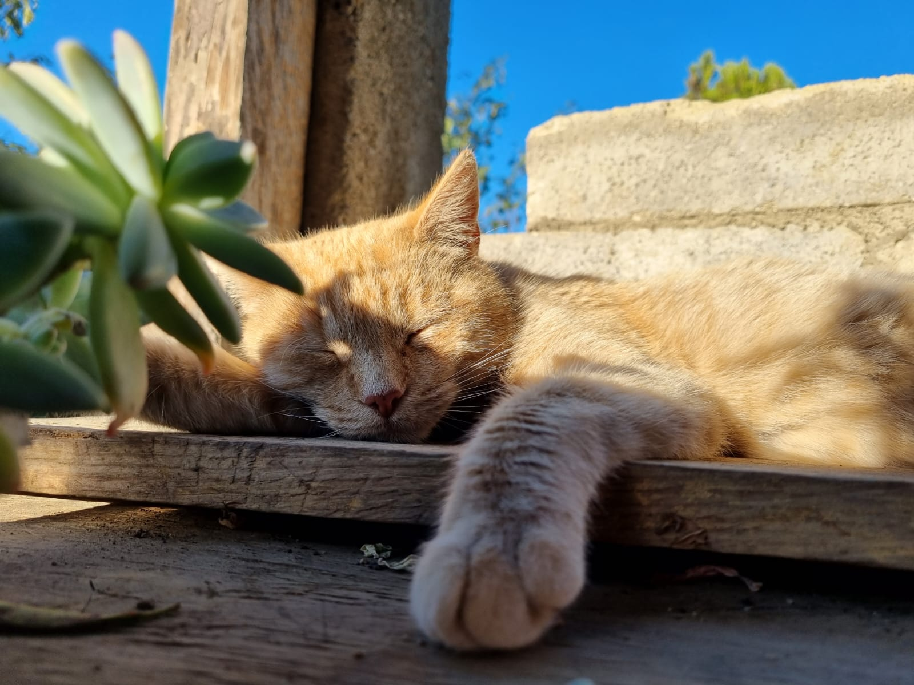

Como todo ser humano en esta faz de la tierrra, nace a partir del amor de dos personas las cuales me concibieron a este mundo, lamentablemente mi padre murio poco despues de que yo naciera, así que jamás pude conocer lo que fue tener un padre. Estudie en una pequeña escuela en un pequeño canton en el que vivia, al terminar la primaria segui estudiando el nivel medio y al final diversificado en el Colegio Americano que esta ubicado en mi ciudad. A los 10 años de edad comence a interesarme por tecnologia y por sus componentes, como funcionaba, como es que puede hacer tantas cosas un aparato así? Así que en el transcurro de los años fui aprendiendo poco a poco a como usar un computadora, varios computadores,los desarmaba y miraba que habia adentro. Cuando me toco escoger una carrera de Diversificado, sin dudarlo me fui por la Computacion, claro que no fue mi primear opcion puesto a que tambien me interese por la electricidad, gracias a uno de mis más grandes idolos "Nikola Tesla". pero no habian carreras de eso en ese momento.
Apartando mi vida como querer ser uno de los más grandes en tecnoplogia, tambien aprendi a programar, Cuando estudiaba en el Colegio me enseñaron por primera vez la programacio!!, Quede fascinado y me interese mucho, era el mejor de mi clase en cuanto a hacer programas funcionales se trataba, c++, python, Netbeans con Java, y por ultimo Html, en este era bastante bueno y no era por más pues a html le encontre un cariño inmenso, pero jamás pude demostrar lo que era capaz, hasta ahora con esta pagina blog.
ahora dejando de lado toda mio vida en experiencia, quiero mostrarles a mis mascotas, es algo repentino pero quiero que las vean
Lindos no? bueno... en donde me quede? oh si
Mi vida a partir de eso fue constante esfuerzo por aprender nuevas cosas y es que no es por presumir pero soy muy bueno aprendiendo rapido, solo muestrame una vez y yo me encargare de todo lo demas.
En el año 2020 me gradue como Tecnico en Computacion, y luego de eso fue una maravilla como un dolor de cabeza, consegui mi primer empleo bien pagado en lo que me gusta hacer y eso en verdad fue un golpe de suerte.
En 2022 obtuve mi primer auto y tambien mi primer pago del taller el cual no fue nada bonito.
Tambien me enamore, en el año 2015 tuve mi primer amor, duramos 6 años hasta que nos separamos por asuntos. Pero mi mayor amor siempre sera a la tecnologia y a las computadoras.